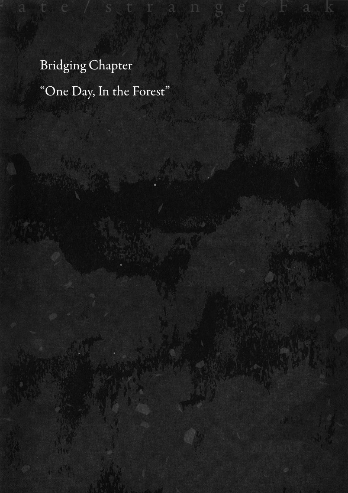
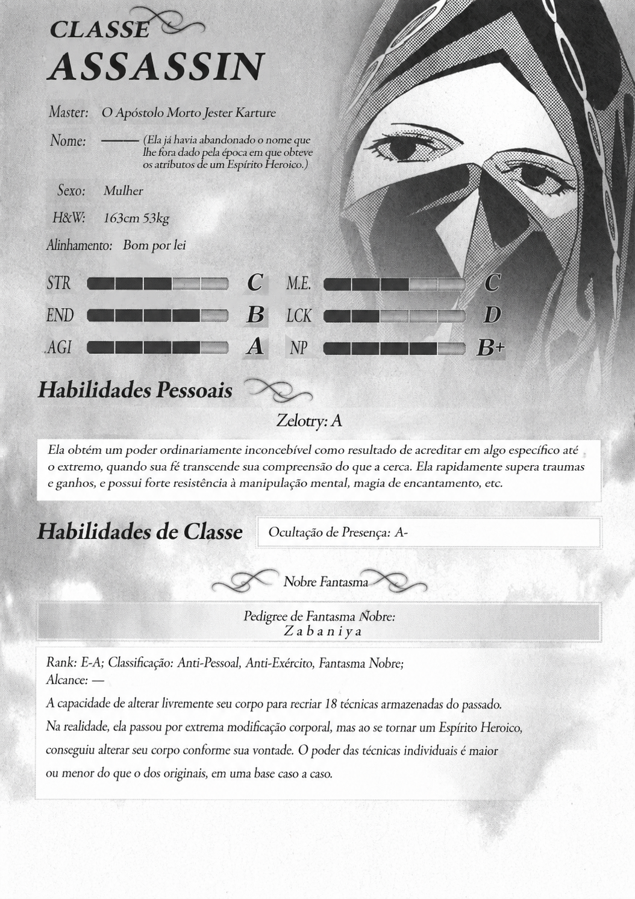
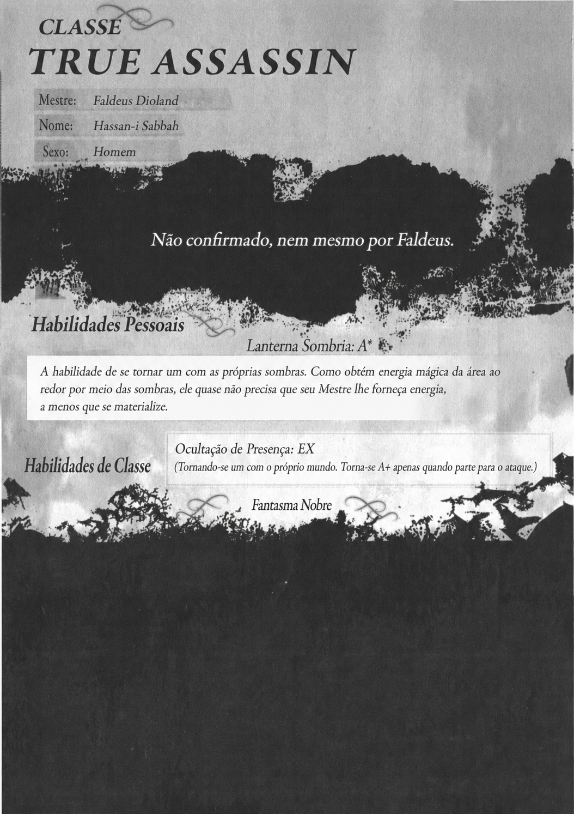

Bridge
"Um Dia, na Floresta"
Bridge
Um Dia, na Floresta
Tarde. A grande floresta.
Assassin já vagava pela floresta havia meio dia. Tinha certeza de ter escolhido o caminho mais curto de volta para a cidade, mas, por algum motivo, não conseguia sair de perto das árvores. Depois de usar Sensibilidade Meditativa: Zabaniya para confirmar o terreno ao redor, chegou a uma conclusão inquietante — a floresta inteira parecia estar se movendo em obediência à vontade de alguém. O relevo se alterava de leve, e até seu senso de direção mudava. Se usasse Sensibilidade Meditativa livremente, conseguiria escapar dali com facilidade. Foi então que uma ideia lhe ocorreu.
Quem criou o Campo Limitado nesta floresta? No mínimo, preciso confirmar se é aliado ou inimigo. Se eu conseguisse arrastar aquele monstro para dentro dele, talvez ganhasse alguma vantagem.
Com isso em mente, Assassin avançou com cautela na direção em que a energia mágica era mais densa. Por fim, avistou dois Espíritos Heroicos se encarando entre as árvores.
"Você fez bem em chegar até aqui, embora eu duvide que tivesse conseguido se não fosse amado pela floresta, ou se não possuísse algum poder especial."
"Pedi ao Locksley — um amigo meu — para me mostrar o caminho."
"Oh? Entendo. Você realmente parece ter muitos amigos."
Saber respondeu às palavras de Lancer com um sorriso largo.
"Você consegue vê-los?"
"Um pouco."
Encerrada a estranha conversa, Lancer foi direto ao que realmente importava.
"E então? O que você quer comigo?" Saber olhou para a garota de óculos que acariciava um lobo atrás dele antes de responder.
"Bem... eu não sei o seu Nome Verdadeiro, nem que tipo de Espírito Heroico você é... mas resolvi dar uma volta por aí e perguntar ao primeiro Servo que encontrasse."
Então ele fez sua proposta — uma frase curta, mas com potencial para arrastar ainda mais esta Guerra do Santo Graal para o seu vórtice de caos:
"Você se importaria de formar uma aliança conosco?"
Bridge
Como proposta, era abrupta demais. Lancer fitou Saber sem reação por um instante, então sorriu com gentileza e abriu a boca para responder.
E a resposta que deu foi...
próximo episódio: [Fake03]


Bridge
Posfácio (contém spoilers deste livro, então cuidado)
E assim, lhes apresento o segundo volume de Fate/Strange Fake.
Tenho a sensação de que forcei bastante a mão, então fiquei preocupado se isso passaria pelo crivo do Nasu-san e dos demais envolvidos. Fico profundamente feliz por poder colocá-lo nas mãos de vocês.
Acho que, daqui para a frente, as rotas vão se entrelaçar de um jeito cada vez mais complexo, então ficarei muito feliz se vocês continuarem aproveitando.
Aliás, sobre o misterioso Espírito Heroico feminino que aparece no final: alguns fãs da série Fate até aqui talvez tenham lido a descrição do penteado dela e pensado: "Espera aí... não vai me dizer que é mais uma cara de Saber, vai?" Felizmente (ou infelizmente), porém, ela só tem um penteado parecido; o rosto das duas não tem nada a ver. E, a propósito, o motivo para esses penteados parecidos é tão banal que nem sei se vou chegar a contar isso até o último volume.
Dito isso, novos Espíritos Heroicos que não faziam parte do projeto do Dia da Mentira do sétimo aniversário começaram a mostrar um pouco de si, mas acho que quem acompanha esse lado da coisa mais de perto vai sacar na hora quem eles são.
A propósito, usei episódios retirados de vários livros de referência e artigos de pesquisa ao reconstruir as vidas dos diversos Espíritos Heroicos, mas reorganizei bastante esse material para caber neste cenário, então assumo total responsabilidade sempre que algo divergir do fato histórico. Por favor, leiam apenas como: "Neste mundo, é assim."
O caso de Caster e do homem sentado ao lado dele no teatro, por exemplo, é contado com muito mais detalhe no excelente romance King of Paris, do Sr. Guy Endore. A conversa sobre vampiros é interessantíssima, então recomendo a leitura se tiverem a chance. (A discussão sobre Apóstolos Mortos, é claro, é original deste livro.)
Quando o primeiro livro saiu, recebi muitas cartas e afins perguntando: "Eu sei que os atributos de Enkidu mudam, mas e o total básico de pontos dele?" Lembro vividamente de consultar o Nasu-san antes do lançamento.
Eu: "Sobre os atributos do Enkidu, ele tem 'Transfiguração', então eu queria definir o total de pontos dele..."
Nasu: "Hmm. Ele é Enkidu, e é rank A, então é A em tudo."
Eu: "A em tudo!? Mas isso não fica até acima do Berserker da Quinta Guerra!? Todo mundo vai dizer: 'Favoritismo com Espírito Heroico! Ele é um Mary Sue!' (Um termo geral para personagens de obras de fã do tipo 'aqui está meu OC supremo, muito mais forte, popular e sortudo que todo mundo da obra original! Uhul!')."
Posfácio (contém spoilers deste livro, então cuidado)
Nasu: "Não liga pra isso."
Eu: "Mas, quer dizer, ter tudo em A fica até acima do Karna."
Nasu: "Não liga pra isso."
Eu: "Sendo honesto, é tão alto que até eu acho esses atributos exagerados demais..."
Nasu: "Eu disse pra não ligar pra isso!"
Eu: "Ai!"
Nasu: "Se olhar pelo outro lado, isso tem suas desvantagens... Ter tudo em A é a base dele, e, se ele elevar a Força para A+, outro atributo cai dois ranks..."
Eu: "Que construção de mundo fria e precisa...!"
Nasu: "E se... (etc., etc.)" Foi mais ou menos nesse tom a supervisão editorial que recebi. Então, por ora, considerem que, no livro 1, a soma total dos atributos de Enkidu está em "um pouquinho abaixo de tudo em A". Mas, se seu Mestre, o lobo prateado, se recuperar por completo, então nem mesmo "tudo em A" será apenas um sonho. (O "etc., etc." ainda é segredo.)
De todo modo, recebi um forte incentivo do Nasu-san enquanto montava a trama: "Eu dou conta de qualquer escalada de poder do meu lado! Aliás, escrever algo tímido e encolhido assim não vai deixar ninguém feliz, então para com isso, garoto!" Isso acalmou meus temores.
...Dito isso, ainda fico com uma sensação de "M-mas será mesmo que isso foi uma boa ideia...?" por ter transformado Hanza num ciborgue de corpo inteiro... mas tenho certeza de que vai dar tudo certo. A ciência da Igreja Sagrada é a melhor do mundo.
Além disso, o misterioso Archer que aparece no final é um Espírito Heroico com um bom motivo para conseguir bater de frente com Gilgamesh, o "mais antigo e mais poderoso dos heróis", então eu ficaria muito feliz se vocês o observassem em perspectiva!
Falando nisso, não sei se os atributos dela vão aparecer neste volume, então vou mencioná-los aqui: a Assassin que Faldeus invocou tem a habilidade "Apagar Presença: EX", então, em compensação, seus atributos normais são mais baixos que os de outras Assassins. Equilíbrio!
Ainda assim, receber supervisão editorial foi divertido. Pude ouvir toda sorte de histórias de bastidores, como o fato de que "Gilgamesh não sabe muita coisa sobre Apóstolos Mortos", e o motivo disso...! (Embora esse motivo não tenha ligação direta com Fake.)
Se os detalhes do passado de Ayaka e o Nome Verdadeiro de Saber serão revelados da próxima vez... isso ainda não foi decidido, mas mais facções estão se formando e a situação em Snowfield está cada vez mais instável, então eu ficaria feliz se vocês acompanhassem essa visão de longo prazo! Acho que o ritmo será de aproximadamente dois volumes por ano, então espero que continuem lendo!
Meu editor, Anan-san, a quem dei muito trabalho com os prazos; meu editor de Dura, Wada-san, que ajustou o cronograma de Durarara!! — no qual eu estava trabalhando ao mesmo tempo —, e todos da equipe editorial; todos os envolvidos com os quais fiquei em dívida por meio de seus derivados de Fate, começando por Urobuchi Gen-san, Higashide Yuichiro-san, Sakurai Hikaru-san, Mashin Eiichirou-san e Sanda Makoto-san; o Team Barrel Roll, que fez parte da pesquisa de fundo dos Servos para mim; Morii Shizuki-san, que está desenhando o segundo volume da versão em mangá de Fate/Strange Fake em paralelo a este livro e que, apesar da agenda apertada, ainda assim fez uma capa e ilustrações fantásticas para mim; e, acima de tudo, Nasu Kinoko-san, que criou Fate e me forneceu supervisão editorial; todos da TYPE-MOON... assim como todos os leitores que pegaram este livro e chegaram até aqui:
Muito obrigado!
Abril de 2015, enquanto participava do Dia da Mentira da TYPE-MOON.
Narita Ryogo